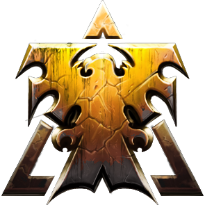
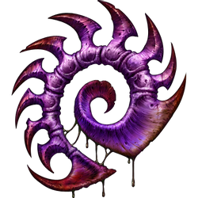
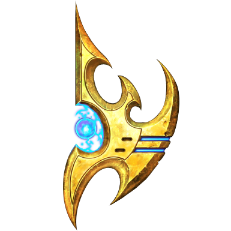

반란군 사령관
짐 레이너

칼날 여왕
사라 케리건

댈람의 신관
아르타니스
수석 기술자
로리 스완
군단 무리어미
자가라
네라짐의 대모
보라준
칼라이 차원 장인
카락스
진화군주
아바투르
탈다림의 군주
알라라크
자치령 유령
노바 테라
감염된 제독
알렉세이 스투코프
정화자 집행관
피닉스
원시 무리 우두머리
데하카
용병 지도자와 자치령 제독
한과 호너
전설적인 무법자
타이커스 핀들레이